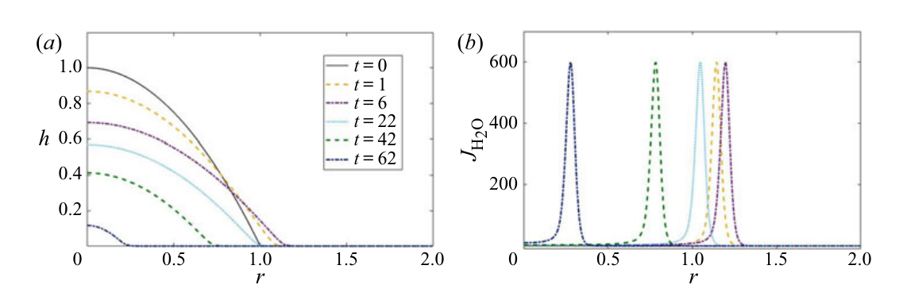

吸湿盐溶液液滴怎样在蒸发和吸水之间转换？
润滑模型把界面质量通量与盐浓度、温度和湿度相联系，进而比较毛细作用、热和溶质 Marangoni 流对接触线运动的贡献。
Dynamics of hygroscopic aqueous solution droplets undergoing evaporation or vapour absorption
研究背景
作者从移动接触线问题切入：液滴铺展与界面相变耦合，本身已经涉及 no-slip 奇异性、蒸发冷却、接触角演化等困难；多组分液滴又会引入优先挥发、浓度梯度、密度流和 Marangoni 流。本文关注的 LiBr-H2O / LiCl-H2O 与普通挥发性二元液滴不同，因为吸湿盐会显著降低液面水蒸气压，使液滴既可能在低湿环境蒸发，也可能在高湿环境吸收水汽。
过去工作已经分别研究过挥发液滴、加热基底上的热毛细流、前驱膜模型、NaCl 水溶液受限/钉扎条件下的蒸发，以及作者团队之前的 LiBr 液滴吸湿实验。缺口是：缺少一个允许三相接触线自由移动、同时显式包含盐浓度依赖物性、环境湿度、界面热质传递和正/负界面质量通量的模型。
本文的核心问题是：当吸湿性液滴在同一物理框架下经历蒸发或水汽吸收时，界面通量如何随空间和时间改变，毛细效应、热 Marangoni 与溶质 Marangoni 如何决定液滴接触线是前进、回缩、连续铺展还是形成薄膜/波纹。
研究方法
模型对象和假设
模型对象是位于固体基底上的薄 LiBr-H2O 液滴，周围气相是干空气与水蒸气混合物。作者采用轴对称圆柱坐标，假设初始高宽比 epsilon = H0/R0 << 1，因此可用润滑近似。液相被视为不可压 Newtonian 流体，LiBr-H2O 的密度、黏度、热导率、热容和表面张力随盐浓度与温度变化；气相密度、黏度、热导率相对液相较小，且水汽在气相扩散远快于盐在液滴内扩散，因此采用 one-sided model，把主要求解放在液滴内部。
移动接触线通过前驱膜处理。前驱膜位于三相接触线前方的固体表面，厚度极小，能迅速与环境达到饱和平衡。这个处理的作用是用一个平滑过渡区避免经典 no-slip 移动接触线的应力奇异性，但它也意味着模型更适合完全润湿或强亲水情形；对有限接触角、接触角滞后或粗糙表面钉扎，解释力会下降。
Figure 1（模型/几何设定）：
- 这张图定义了 LiBr-H2O 液滴、基底、气相水汽浓度、液滴内水浓度、界面水浓度、法向和切向单位向量，以及前驱膜位置。
- 它支撑后续模型推导，因为质量、动量、能量、浓度方程和界面边界条件都围绕这个几何建立。
- 读图注意点：作者没有解完整气相扩散场，而是把环境水汽浓度作为给定边界/参数；因此邻近液滴相互作用或局部湿度边界层不是本文直接求解对象。
界面质量通量
文章的关键建模点是把 Hertz-Knudsen 方程与液-气界面的化学势平衡结合，得到可同时描述蒸发和吸收的界面质量通量表达式。通量受三个量控制：
- 压力项：液滴内压力与气相压力差；
- 温度项：界面温度与环境气相温度差，体现蒸发冷却或吸收放热；
- 浓度项：液面水浓度与气相等效水浓度之间的关系，体现盐对水蒸气压的降低。
因此，J 的符号和大小不是固定的。低湿时液滴向气相失水，J 表示蒸发；高湿时气相向液滴供水，J 反向表示吸收。作者还指出，对水和 LiBr 溶液这类普通液体，蒸汽反冲压力不是主导项，经典 Hertz-Knudsen 处理足以保留关键因素。
控制方程和数值方法
求解变量包括液滴高度 h、压力 p0、速度场、温度 T、水浓度 chi_H2O 和界面质量通量 J。无量纲化后，代表性参数包括：
- epsilon = 0.2，表示薄液滴；
- Pr = 10；
- Ma = 0.1；
- Pe = 100；
- E 控制蒸发/吸收强度，纯水基准为 1e-4，LiBr-H2O 基准为 1e-6；
- psi 控制质量通量表达式中浓度项与温度/压力项的相对权重，LiBr-H2O 基准为 0.1；
- hygroscopic solution 的初始水质量/浓度条件取 chi_H2O = 60%。
作者使用有限元法求解弱式方程，并用前驱膜边界条件处理接触线。对吸湿溶液液滴，作者把 Reynolds number 设为 0，以抑制界面振荡并保持主要机制，即毛细、Marangoni 和相变通量的相对作用。
具体结果
结果 1：纯水液滴蒸发作为基准

Figure 2（纯水液滴蒸发：轮廓与界面质量通量）：
- Figure 2a 展示纯水液滴在 RH = 30% 下的轮廓演化。液滴初始阶段由毛细作用驱动铺展，但蒸发会趋向让接触线回缩。
- Figure 2b 显示界面蒸发通量沿径向分布，边缘附近通量较强，这是经典 sessile droplet 蒸发中接触线附近通量增强的体现。
- 这张图的作用是建立比较基准：对于无盐纯水，界面通量主要来自水蒸气压差和热效应，没有盐浓度导致的显著溶质 Marangoni。
Figure 3（纯水液滴在不同 RH 下的质量和接触线位置）：
- 高 RH 降低液面与环境之间的水汽压差，延长液滴寿命。
- 高 RH 下纯水液滴铺展更明显，作者将其解释为热 Marangoni 较弱、接触线处水耗尽较慢。
结果 2：低湿下 LiBr-H2O 蒸发会产生薄膜/波纹状边缘
Figure 4（吸湿液滴低湿蒸发：质量和轮廓）：
- 条件是 chi_H2O = 60%、RH = 30%。液滴质量随时间降低，但蒸发速率逐渐变慢。
- 轮廓上先发生快速铺展；随后三相接触线附近出现比前驱膜厚得多的液体薄膜，并逐渐发展成 ripple-like 形状；中心部分则持续收缩。
- 这说明盐溶液蒸发不能简单类比纯水：边缘盐积累改变局部蒸汽压与表面张力，导致边缘不容易干掉，反而保留并扩展成薄膜。
Figure 5（低湿蒸发时 J、T、chi_H2O、sigma 的径向分布）：
- Figure 5a 显示质量通量在接触线附近集中，但随着边缘盐浓度上升，局部蒸发被抑制。
- Figure 5b 的界面温度分布体现蒸发冷却；这种温度梯度会产生热 Marangoni。
- Figure 5c 显示水浓度从中心到边缘形成梯度：中心相对水丰富，边缘盐积累。
- Figure 5d 中表面张力随浓度/温度改变，驱动溶质 Marangoni 与热 Marangoni 共同作用。
Figure 6（低湿蒸发机制图与表面速度）：
- Figure 6a 分析界面总速度 Us，作者给出 Us = u|z=h = 3f/(2h) + (h/(4 mu Ma))(partial sigma / partial r)，显示蒸发过程中表面速度始终为正，即总体流向接触线外侧。
- Figure 6b 用机制示意图总结：边缘蒸发强 -> 盐积累 -> 表面张力梯度和毛细压力共同驱动液体外流；同时吸湿盐降低边缘水蒸气压，抑制局部继续干涸。
- 关键机制链条是：低湿蒸发增强边缘浓缩，边缘浓缩降低局部水活度并改变表面张力，外向流补给接触线附近液体，形成持续铺展和薄膜/波纹。
结果 3：高湿吸收时，液滴质量增加但接触线可能先铺展、后回缩、再铺展
Figure 7（高湿吸收：质量和轮廓，psi = 0.1）：
- 条件为 chi_H2O = 60%、RH = 90%、psi = 0.1。水汽从高湿空气进入液滴，液滴质量增长，但吸收速率随接近平衡而减小。
- 轮廓演化显示接触线起初前进，约 t = 150 后开始缓慢回缩，几百个无量纲时间后停止回缩并再次铺展。
- 这不是单调的吸水膨胀问题，而是吸收通量分布、温度梯度和浓度梯度共同调节接触线。
Figure 8（psi = 0.1 吸收机制图）：
- 水汽吸收使水浓度在液滴内重新分布；图中较深颜色代表更高水浓度，界面颜色代表温度分布。
- 该图强调：高湿吸收时界面质量通量不是均匀增加体积，而是通过空间非均匀的水浓度和温度场改变 Marangoni 应力。
Figure 9（psi = 0.1 吸收时 J、T、chi_H2O、sigma 的径向分布）：
- 该图对应 Figure 7 的复杂轮廓变化，展示吸收通量、界面温度、水浓度和表面张力如何随时间重排。
- 对理解接触线回缩尤其重要：当非均匀吸收导致接触线附近水富集时，溶质 Marangoni 可指向液滴中心，抵消甚至超过毛细/热 Marangoni 的外向趋势。
Figure 10（psi = 0.1 下速度分解）：
- 作者把表面径向速度分解为毛细速度 Uca、溶质 Marangoni 速度 Ucg、热 Marangoni 速度 Utg 和总速度 Us。
- 读图的重点是符号竞争：毛细和热 Marangoni 可推动外向铺展，而溶质 Marangoni 在某些阶段可足够强，使总速度转向或减弱，从而解释回缩阶段。
- 这张图是全文最直接的机制证据之一，因为它把“接触线为什么不单调前进”拆成可比较的速度贡献。
结果 4：psi 改变后，吸收通量分布和接触线动力学会完全改变
Figure 11（psi = 0.01 吸收机制图）：
- 将 psi 从 0.1 降到 0.01 后，浓度差贡献增强，吸收质量通量沿界面更均匀。
- 更均匀的通量让液滴表面水浓度分布更均匀，溶质 Marangoni 变弱，外向毛细和热 Marangoni 更容易占优。
Figure 12（psi = 0.01 吸收时六个场量）：
- Figure 12a 显示低 psi 下液滴顶端吸收通量更大且整体更均匀；
- Figure 12b 显示这种中心吸收会带来显著温度梯度；
- Figure 12c-d 给出水浓度与表面张力分布；
- Figure 12e 显示表面总速度在吸收过程中保持正值；
- Figure 12f 对应连续铺展的高度/轮廓变化。
- 机制判断：低 psi 时，较弱的溶质 Marangoni 无法压过毛细和热 Marangoni，因此液滴连续向外铺展。
Figure 13（不同 psi 下轮廓和质量）：
- psi = 0.05 时出现间歇性铺展与回缩，说明它处在连续铺展和强回缩之间的过渡区。
- Figure 13b 显示小 psi（0.01、0.02）下吸收速率更高，因为质量通量分布更均匀，有效吸收面积更大；大 psi（0.05、0.1）下通量更局部化，总吸收较慢。
Table 3（不同 psi 的分阶段铺展指数）：
- psi = 0.01 和 0.02 基本是三阶段连续铺展，第二阶段指数约 0.186 和 0.175；
- psi >= 0.025 出现五阶段行为，中间阶段指数为负，例如 psi = 0.05 时 Stage IV 的 n = -0.369，表示明显回缩；
- 这张表把 Figure 16 的趋势定量化，说明模型对 psi 很敏感，不能把 psi 当作无关紧要的拟合常数。
结果 5：实验验证显示高湿吸收下 LiBr 液滴缓慢铺展
Figure 14（实验基底与亲水处理）：
- 基底是玻璃片，粗糙度 Sq = 0.012 um；经 3 min 等离子体处理后形成高表面能亲水层。
- 纯水接触角接近 0 deg，说明实验特意构造了超亲水条件，以贴近模型中的前驱膜/强润湿假设。
Figure 15（54 wt.% LiBr-H2O 液滴在 90% RH、25 degC 下的接触角和轮廓）：
- 初始接触角约 17 deg +/- 3 deg；吸收水汽后接触线快速前进，接触角明显下降；
- 整个过程在 10^2-10^3 s 的时间尺度上逐渐发生，远慢于低黏度液滴在光滑基底上的早期惯性/黏性铺展；
- 作者强调，单靠盐浓度降低导致的静态表面张力变化，不能解释接触角的大幅下降，必须考虑动态温度和浓度场导致的 Marangoni 作用。
Figure 16（实验与模型的接触半径标度）：
- 实验中，R(t) 可分为三阶段：前约 10 s 的第一阶段指数 n = 0.015 +/- 0.005；随后数百秒的主导第二阶段 n = 0.093 +/- 0.006；末期接近平衡，速率趋零。
- 模型在小 psi 下给出连续铺展；在较大 psi 下给出铺展-回缩-再铺展。作者认为在合适 psi 下，主导阶段铺展速率能与实验定量对应。
- 读图注意点：实验验证主要是定性和阶段指数层面的对应，不是对界面通量、内部浓度场或速度场的直接测量。
关键机制
低湿蒸发机制
低湿时，环境水汽压低，水从液滴表面进入空气。边缘附近质量通量强，导致接触线附近水分更快损失、盐浓度升高。盐浓度升高降低局部水活度，使边缘进一步蒸发被抑制；同时浓度和温度梯度改变表面张力。毛细压力与溶质 Marangoni 共同驱动液体向外补给边缘，因而接触线持续前进并形成厚于前驱膜的薄膜/波纹。
这个机制对数值模拟很重要：如果模型只保留总蒸发率，或者假设边缘永远是最强干燥区，就会错过“边缘盐积累反过来保护边缘液体”的反馈。
高湿吸收机制
高湿时，水汽进入液滴，液滴质量增加，但接触线运动取决于吸收通量的空间分布。若 psi 较大，通量受界面温度影响强且高度非均匀，接触线附近水浓度变化会产生指向中心的溶质 Marangoni，可能压过毛细与热 Marangoni，引起回缩或波纹。若 psi 较小，通量更均匀，溶质 Marangoni 较弱，毛细和热 Marangoni 维持外向表面速度，液滴连续铺展。
- 界面通量是否随半径和时间显著非均匀；
- 挥发/吸收是否改变局部组分浓度并反过来改变水活度或蒸气压；
- 表面张力梯度中温度项和浓度项的方向是否相反；
- 接触线附近是否存在前驱膜、超薄液膜或数值正则化区域，它们可能决定边界通量和应力的解释。
适用范围与局限
- 前驱膜假设解决了移动接触线奇异性，但会把真实接触角滞后、表面化学非均匀、粗糙钉扎等效应弱化。实验使用等离子体处理超亲水玻璃，也是在帮助满足这一假设。
- psi 对结果高度敏感。文中展示了 psi 从 0.1 到 0.01 会改变吸收通量分布和接触线行为，因此它既是机制参数，也是潜在拟合自由度；使用该模型时应做灵敏度分析。
- 实验验证主要对接触半径/接触角趋势和阶段指数进行比较，没有直接测得液滴内部浓度场、温度场或界面速度场，所以对 Figure 5/9/10/12 中机制分解的验证仍偏间接。
- Re = 0 的设置有助于稳定计算并强调黏性/毛细/Marangoni 主导机制，但如果液滴更大、冲击/振荡更强，惯性项可能不能忽略。